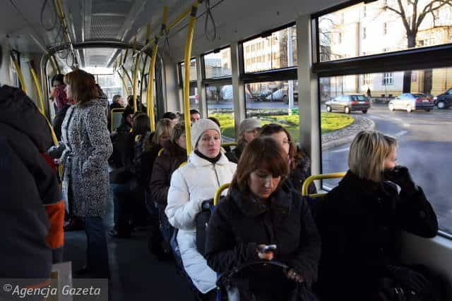
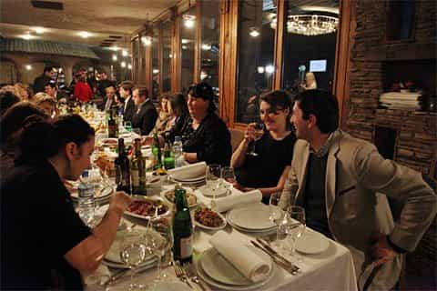
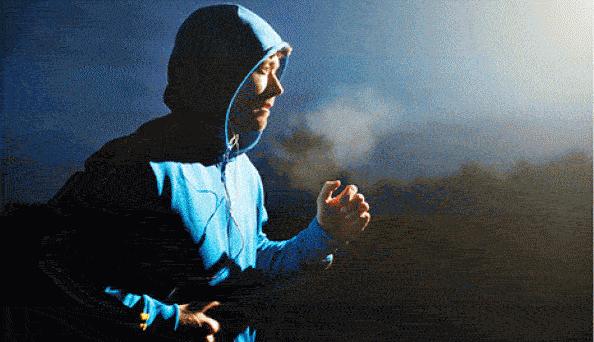

< < < Back
26 Tips For Getting Laid In Europe During The Winter – Return Of Kings
I decided to stick around in Poland to defy the Eastern European winter. There is no comparison between approaching a girl during summer in a place like Lithuania, Poland, Serbia, or Belarus and doing the same in winter. The short skirts are (almost) gone, no sun on your face, and you do not feel as good.
Being there now, I observe the transition but what do men do? They adapt. So instead of letting yourself and your dick go into hibernation, here are my techniques to keep a regular flow of pussy during the cold months.
1. Broaden and reinforce your social circle
Investigate with friends and see if girls are available. Interact more with groups of friends or coworkers. Ask about house parties, propose activities and throw a party yourself.
2. Focus on girls indoors

Shopping malls, shopping malls, shopping malls. Even in their winter gear, the girls that go to the shopping mall still look sexy. They don’t stop buying bread, nice lingerie, and useless stuff because it is winter. Shopping malls have to become your main venue for day game.
3. Approach in public transport

The trams and buses with a heating system, if they are available. No point being in the Soviet frozen meat wagon and talking to a girl that is shivering and only thinking about going home as fast as possible. Or kill time at the bus stop by talking to cuties.
4. Don’t stay at home too long
Seems like common sense, but more than ever, you will be deficient in Vitamin D. Fresh air and sun are limited so get as much as possible. It will influence your mood and your horniness. Get some Vitamin D supplements if you are stuck in Mourmansk for the winter.
5. Change your day game routine
With shorter daytime, you have to make the best of it. Make it a commitment to day game in the morning or early afternoon. Girls become suspicious when a stranger approaches them as the sun sets.
6. Know that the clock is ticking
Forget long street game sessions and dozens of approaches. When I get out of my den, my ears burn from the cold after 10 minutes. Some guys can rock the cap or beanie look, but it simply does not work for me. The cold will wear you out. Adapt your outfit and be efficient.
7. Go to the bania or sauna

A must in Eastern Europe. Organise an outing to one ahead of time with your social circle. This is a great experience where everyone will be drinking and the girls are often naked under their towels and undress in the bania. Public banias or saunas are often mixed-sex. Tip: Keep it quiet inside or people WILL tell you to shut up.
8. Do more sports

Hit the gym, get ready for the summer and run some gym game if that is your thing. Other alternatives are the numerous aquaparks, indoor pools, or even ice rinks where girls go. Join a local sports club: MMA, crossfit, team sports… They are not as crowded as in the summer, andyou will make friends and meet girls.
9. Aim more at weekend night game
As daylight regresses, the conversion of approaches to notches during weekdays can be smaller.
10. Drink up
EE girls and guys drink more to keep warm. They are then more socially lubricated. Girls are easier to approach and the competition is neutralised (or more aggressive if you are unlucky). Because it is warm in the bar, they stay longer at the same spot and give you more time to act.
11. Spend more time in restaurants

People eat more in winter, since it is a physiological necessity. EE is not like America or Britain. In Georgia or Western Bulgaria Macedonia, people at neighboring tables will wave you over to join their tables. Do some networking and avoid the gringo traps with poor quality overpriced food.
12. Use winter food as bait
Orient your conversation with girls on the local food. Ask her about a traditional dish in particular and if it is better in a restaurant or home made. She will answer home made. They enjoy cooking for men, so ask her if she knows how to do it, then make her cook it for you. Meet her at hers or yours and get to work.
13. Plan your New Year’s Eve well
Forget overpriced clubs. Plan months ahead. Try a NYE old school ball with truckloads of single girls in evening dresses. Or rent a mountain lodge in the Balkans with homemade tucker and alcohol. Gather the wingmen and use their networks to bring along potential targets. Their girlfriends’ friends are usually prime material.
14. Refine logistics

Choose the venue of the date wisely. Location needs to be even closer to yours than in summer. Cold weather triggers her logical brain faster and the longer you stay out, the more likely you will get the “I am not going with you” line.
Find a venue with a low ceiling, good heating, and no walls made of stone or cold materials. Avoid benches and find a couch. Choose a place that sells tea and vodka. Because of the sofas, the atmosphere feels intimate faster.
15. The key is in the tea
The “tea”. Perfect winter addition to “Let’s go to mine, I need to charge my phone.” Not beta at all, tea is a fundamental part of EE life. After a daytime walk or after the bar, say “Let’s go for a walk and have a tea”. Sell it well. Say that you will make it with honey and lemon, let her imagine the coziness of your apartment.
If she hesitates: “Let’s go. When we are done, we can go back and party.” Put the kettle on, use the “You look cold, come here,” then get to work.
Roosh explains here how to step up your tea game.
16. Don’t forget the caffeine

Coffee is also a good alternative, but it seems to be more of a morning drink there. Regular cafes and big chains are more frequented, especially if you need to get intimate with your target.
17. Try university game

Find a local university or academy and its library. It has to be accessible to outsiders. If you use some game on the library lady, they might let you in even if you are not a student. The problem is that it needs silence. Go stretch your legs in the corridors and approach or lock a target in the library and talk to her after isolating her.
18. Use your own roof
Orientate the second or even the first date towards meeting her directly at your place first. Even if EE girls are not easily deterred by the cold, they are still girls and can be attracted by staying indoors and watching movies. A homemade dinner is also more likely to happen in winter.
19. Stay strong

Health is as important as game. Keep training, don’t stay outside for long when you sweat, and drink loads of tea and eat honey. Use warm clothing and waterproof shoes. Don’t overestimate your resistance to the cold. No point playing it hardcore if you are out of commission for the next week.
20. Hit the slopes

If you feel like it, shell out some cash and head for the ski resorts of Poiana Brasov (Romania), Zakopane (Poland), Bansko or Borovets (Bulgaria). I hate skiing but gaming pretty girls while drinking beer near a roaring fire while everyone else is breaking an ankle does not sound too bad. Loads of students head there during the winter break in the sole purpose of partying and getting drunk.
21. Check your privilege calendar
Keep track of the local Catholic or Orthodox observances and holidays (and Muslim if you are in one of the Stans or going wild and courting Magomed the Chechen’s sister) to plan your dates well. With the festive season, many girls return home visiting their families and the religious ones may feel guilty about swallowing your load on a religious holiday.
22. Get online
Focus on Internet game if that is your thing. Longer hours inside means more time to swipe and look at what the local dating website has to offer. Fire up Tinder, Badoo, Mamba and off you go. Different countries will give very different results in Internet game. Do your research.
23. Cheer up
All the locals look depressed and rarely smile in winter. Display a positive attitude in public places. By adopting a friendlier vibe, you stand out. Not talking here about the idiot grin, but rather the confident smirk.
24. Cut the bullshit
Go to the essentials and establish a flirty chat faster. You cannot let the conversation go on for too long if it is outside like you could in summer. Bring her on an insta-date (the cold will convince her easier) or get the girl’s number and find the next one.
25. Respect the Lord’s Day

Forget Sunday afternoon game. If you are like me and hate the crowd, especially when you are hung over, steer clear from the centre. The cities are usually full of those winter manifestations, parades, and families strolling around.
26. Participate in the local life
In EE’s first and second tier cities, the winter is particularly rich in film festivals, food festivals, sports competition and other cultural events to entertain the locals and encourage drinking. Go check it when you are not hung over, hang out with girls or develop local connections.
That’s about it. Buy gloves and a beanie, take your vitamins, hit the gym, eat a lot, and motivate yourself by the thought of pretty girls who are up for it because their bed is cold.
BONUS: Those two winter events might not get you laid but you should try them at least once in your life
Read More: If You Can’t Get Laid In The West, You Won’t Get Laid Abroad